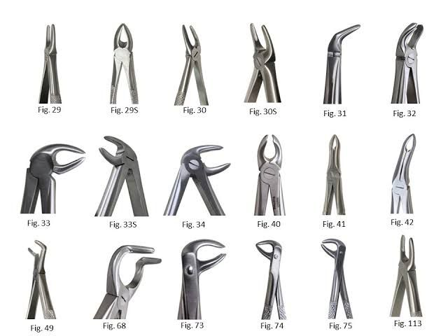
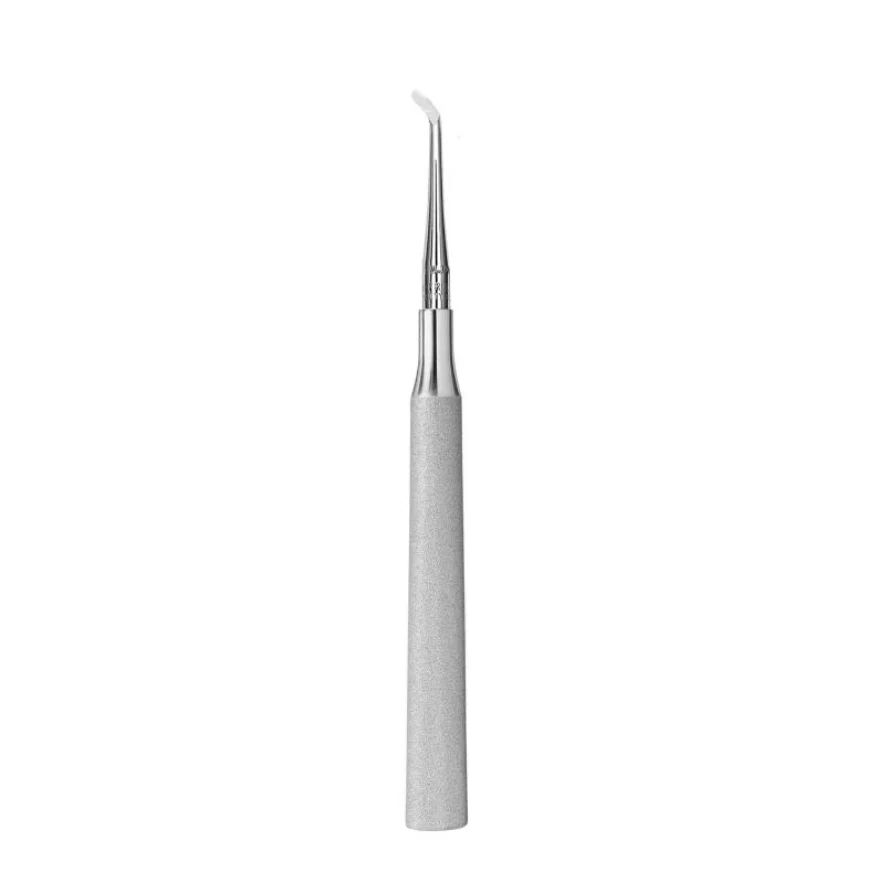

Pestaña: Instrumental de Extracción

FórcepsInstrumento principal para la extracción dental. Consta de mango, cuello y bocados adaptados a la anatomía de cada diente. Permiten aplicar movimientos controlados vestibulares, linguales y rotatorios
SindesmótomoInstrumento cortante que se introduce en el surco gingival para desprender las fibras del ligamento periodontal antes de la luxación.